Pathways
Score a gene set in every cell: the Hallmark sets, Reactome and GO, or your own list, and how the score is calculated.
On this page2
The Pathways tab scores a gene set in every cell and paints the score on the tissue. It is always in the tab list. It works when gene expression was mapped at import.
Choose where the genes come from. Hallmark is built in; Reactome and GO are searched online. Mine (also called My Pathways; its lists are tagged Custom) holds your own sets: lists you type, Hallmark sets you customize, and Reactome or GO pathways you save.
Hallmark
Gene set
Works offline.
Set the species
Below the source buttons, Mouse or Human decides which version of the sets is used: the mouse or the human Hallmark lists. It is set from the dataset (the organism given at import, otherwise the gene names), and the choice is remembered for the dataset in this browser.
Switching it clears the scores computed so far, because their gene lists change.
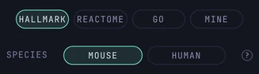
Search and pick
Pick one of the 50 Hallmark sets. The list is grouped by process, such as Immune or Proliferation. Each row shows the set name and how many of its genes the dataset measures, for example 38/94. Type a set name or a gene in the search field to narrow the list.
For mouse data, PointillViz uses the mouse version of the Hallmark lists published by MSigDB. The ? next to a set gives its description and citation.
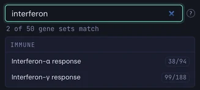
Read the gene chips
Below the list, the picked set shows its genes as chips. Plain chips are measured in the dataset. Greyed, struck-through chips are not on the gene panel. A chip with an arrow is measured under an older name: here the set’s Skp1 is Skp1a in the dataset.
The line above the chips counts the measured genes, here 22 of 32 genes measured. The same genes fill the Quick score box, where they can be edited before scoring.
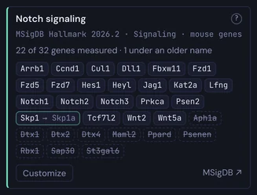
Customize a set
Customize on the set’s card opens a copy to edit: genes can be added or removed, and the copy is kept in Mine as Modified. The Hallmark set itself never changes.
Reactome
Gene set
Needs an internet connection.
Set the species
Below the source buttons, Mouse or Human decides which genes a pathway gets. Reactome curates human pathways: for Human the genes are used as they are, for Mouse each gene becomes its mouse orthologs. A note on the card counts the human genes that have no mouse ortholog.
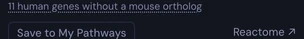
Search Reactome
Find a pathway. Type a name, for example Wnt, or an ID such as R-HSA-195721, and click a result.
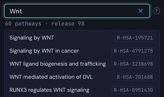
The genes are fetched and shown as chips, as for Hallmark, with the pathway’s ID, the release and the species above them.
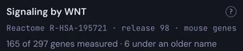
Keep it
Save to My Pathways stores the gene list under Mine, so that it can be scored later without internet. Once saved, the button reads Saved · open in Mine. The link Reactome ↗ opens the pathway on the Reactome website.
GO
Gene set
Needs an internet connection.
Set the species
Below the source buttons, Mouse or Human decides which annotations are used: the genes that Gene Ontology annotates in that species.
Search Gene Ontology
Find a biological process. Type a name, for example hypoxia, or an ID such as GO:0001666, and click a result. Only biological processes are listed.
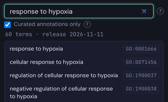
A term includes the genes of its more specific terms, in the dataset’s species.
Curated annotations only
This box is on by default: only genes with experimental or curator-reviewed evidence are used. Switch it off to add genes annotated by computer prediction. The set becomes larger and less certain. The card says which of the two was used.
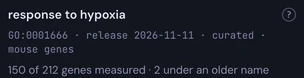
A card notes when a set is broad: a score over that many genes says little. It also notes when the list stops at 50,000 annotations.
Mine / Custom
Gene set
Always available.
The species
Here the species hardly matters: a list is matched to the dataset’s gene names as typed. Only mouse and human are offered. For another organism, paste its genes into Quick score to score them once without saving, or save them as a list here to score them again later.
Make a set
Create a list. Press + New pathway, give it a name, type or paste genes (commas, spaces or new lines) and press Save pathway. Genes that are not in the dataset are tagged as unavailable and left out when saving; PointillViz asks before it does so.
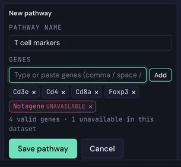
Manage the sets
Each row has three icons: Edit, Duplicate and Delete (Delete asks for confirmation). A tag shows where a set comes from: Custom, Modified, Reactome or GO.
Sets are kept in this browser, separately for each dataset, and appear in the Pathway Gallery as well.
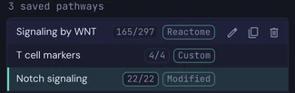
Pick a mode below. Colour map scores one set and paints it on the tissue; Pathway Gallery shows all sets as small maps.
Paints the map
Always available in the Pathways tab.
Choose the genes
A picked set fills the Quick score box. A list of any genes can also be typed or pasted there, separated by commas, spaces or new lines. It is scored without being saved.
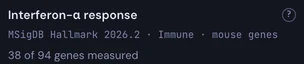
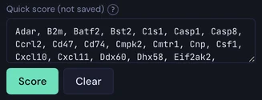
Press Score
Each cell gets a score, painted on the tissue with a diverging scale. The first score in a dataset loads the expression matrix and shows its progress; later scores take a fraction of a second.
Clear returns the tissue to grey.
Read the status line
It says how many genes were used and how many were missing, and how many control genes were drawn, for example 38 used, 56 missing · 793 controls. When several sections are loaded, genes that were not measured in every section are left out of the score and counted separately.
Hover and colour scale
Hovering a cell shows its pathway score. Colour scale offers ±1, the same scale for every map, and Auto, which stretches each map to its own range. Only the colours change; nothing is recomputed.
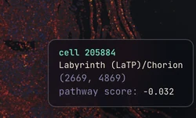
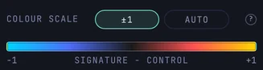
Overview
Open it with Open Pathway Gallery, always available in the Pathways tab.
See every set at once
The gallery shows a small map of the tissue for each Hallmark set, grouped by process, and for each set in Mine. The search field filters by name; / jumps to it.
In the picture, Category is Development and Colour scale is Auto: red cells score above their control genes, blue cells below.
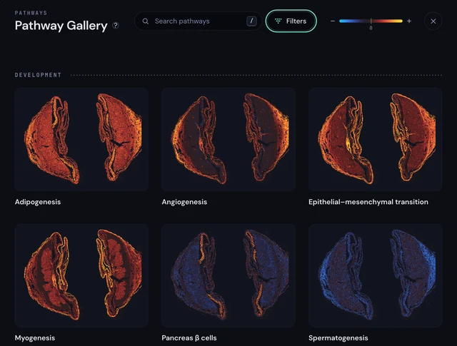
Pick a map
A click on a map selects that set in the Pathways tab, scores it on the tissue and closes the gallery.
Filters
Population decides which cells the small maps show: Current visible cells follows the view and its filters, All cells ignores them. Colour scale is the same ±1 or Auto choice as in the tab. Category restricts the gallery to one process group.
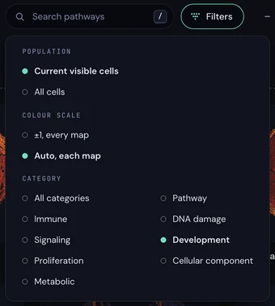
How the score is calculated
A cell’s score is the average expression of the set’s genes minus the average expression of control genes, using log-transformed counts scaled to 10,000 per cell.
The controls match the set’s expression level: all genes are sorted by mean expression into 25 groups, and from each group that holds a gene of the set, up to 50 other genes are drawn. A score above 0 therefore means higher than expected for genes at that level.
The same gene list, in the same order, always draws the same controls. The method is Scanpy’s score_genes, with PointillViz’s own random generator, so the last digits can differ from Scanpy.
Reading a score
- Zero means “like the controls”. A positive cell expresses the set genes more than expression-matched genes; a negative cell, less. The colour bar is labelled signature − control.
- The score is descriptive. It comes with no p-value. A strongly coloured region is a pattern to look at, not a tested result.
- Few measured genes make a noisy score. Check the count on the card. On a small panel, the expression groups also hold few genes, so fewer than 50 controls can be drawn from each.
- Broad sets say little. A set with more than 1,500 genes is flagged; its average mixes many processes.